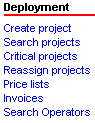
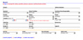
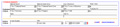

Blacksmith Applications, www.blacksmithapps.com
Home > Deployment OR Home > Projects Scorecard
The options you see under Projects may differ, depending on your implementation.

Search projects - Selecting this link displays the Search Projects page (click for a full sized image):

Critical projects - Click this link to display any critical projects.
Reassign projects -
Click the Reassign projects link to display a page on which you can select the criteria defining what to reassign, and whom to reassign it to. First you select the Criteria for Project Reassignment by clicking the [Select Criteria] link.
Select the current Project Sponsor, Functional Area and Owner Position. Then, make the same selections for the person to whom to reassign the project, on the right side of the page. If you click the [Reset] link, all criteria selections are cleared.
Once you've selected these reassignment criteria, the [search projects] link appears so that you can select the actual project(s) to reassign.
Invoices - Click Invoices to display an invoice search page with invoice and customer search criteria (click for a full sized image):

When the invoice search results display, each invoice is summarized in a row: click the invoice number to display the details of the invoice.